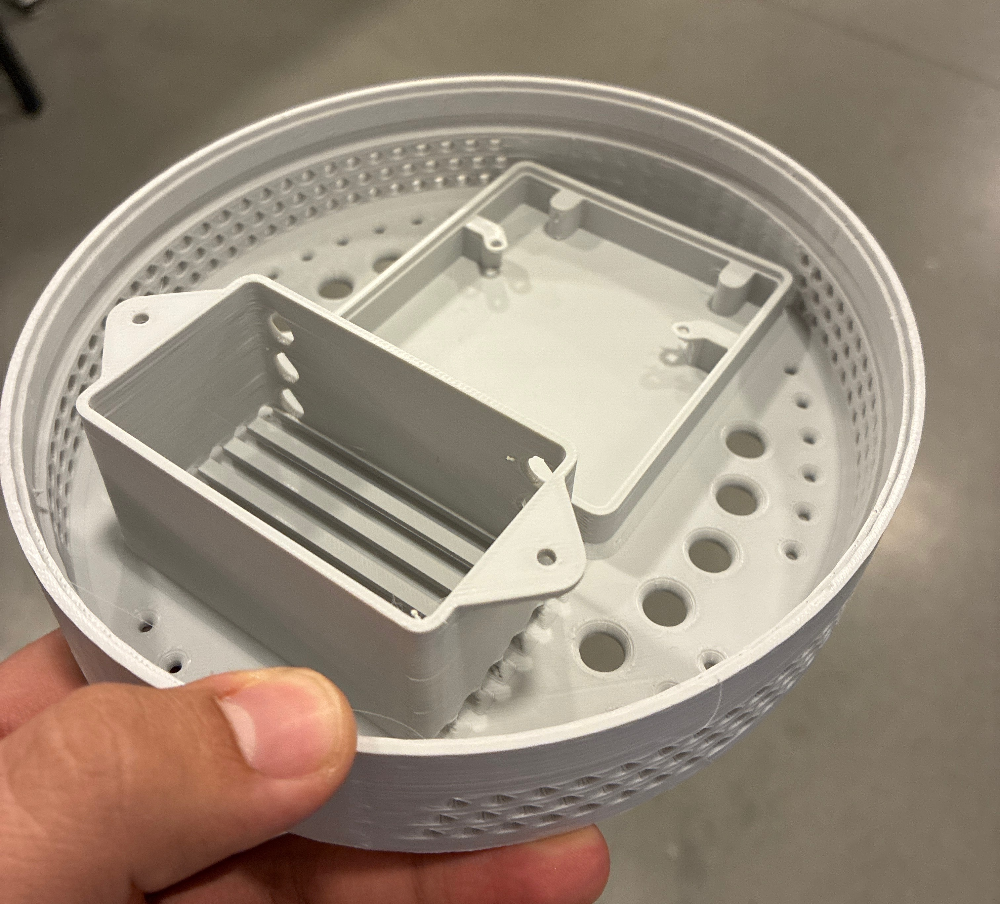

Results & Evaluation
The final demo shows the assembled Sense Hat operating as a wearable obstacle-awareness system, with the brim-mounted sensors and haptic feedback hardware integrated into the finished prototype.
Evaluation Criteria
Discreteness
Visual inspection to confirm that no electronic components are visible from the outside; hat appearance is consistent with standard wide-brimmed fedora.
Navigation Reliability
Participants are assessed on whether they can correctly interpret haptic direction and intensity cues to reach a destination and avoid obstacles without sight.
Wearability
The assembled hat is evaluated for comfort, weight distribution, and ease of use, including automatic on/off via FSR pressure sensing.
Known Challenges
Electronic components must be insulated from direct contact with the user's skin. The FDM-printed electronics housing provides a physical barrier while allowing passive heat dissipation from the STM32, battery, and boost converter.
Directional sensing accuracy depends on the hat remaining approximately level. Tilting or rotating the hat could cause false-positive detections in unintended zones. User awareness of proper positioning is the primary mitigation strategy.
The STM32 is configured for low-power sleep whenever the hat is removed. Active run time is approximately 2.3 hours at full load; upgrading to a 6000 mAh cell doubles this to ~4.6 hours.

